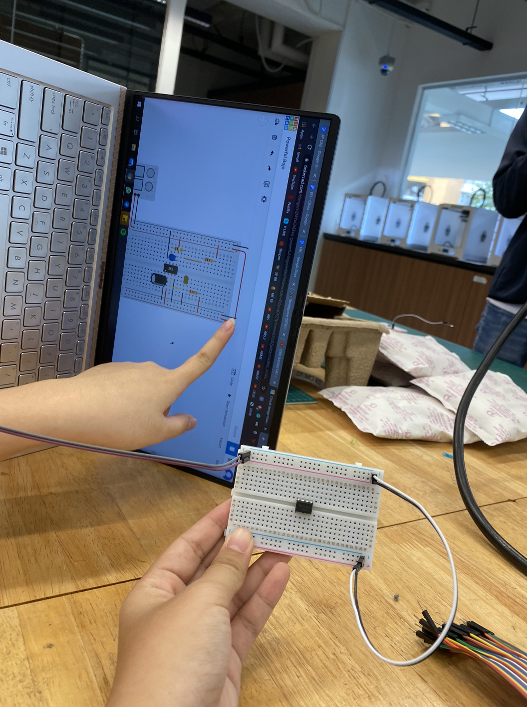

Electronics
In this module, we learn the basics of electronics.
Electronics consist of...
Voltage, measured in volts
Current, measured in Amps
Resistance, measured in Ohms
Common electrical components
- Switches: usually the connector and breaker of a circuit. A common type is a tactile switch. Used regularly in this module.
- Wires: Usually made up of copper with insulator on the outside
- Resistors: made to have a fixed resistance to current
Breadboard and UNO board (Aurdino)
Aurdino: An Arduino System comprises of Software & Software Tools including : Integrated Development System (IDE), Arduino programming language (C++ like), Development & Debugging tool and Software libraries (open source contributions).

Breadboard: refers to a (usually) solder-free, plug-and-play platform allowing for speedy insertion and removal of electrical components in circuit-building applications.

Assignments
UNO switch with LEDs, as you can see below, we have 4 LEDs in a circuit broken and connected by a tactile switch. With the code, the button allows different LEDs to turn on at once. The input is the switch and the output are the 4 LEDs. These are all tested using the platform TinkerCAD. You can make circuits on the site to test out before doing.Here is another circuit using the Potentiometer. It allows us to control the brightness of the LED. The input is the Potentiometer and output the LED.
This is my friend and I applying the circuit tested in TinkerCAD to a real breadboard and UNO board.

We made use of a 555 to create an itegrated circuit with an LED.
This is the final working circuit.
Soldering
This is a useful and good video reference to learn the basics of soldering.
Soldering ismostly used in electronics, metalwork, etc. It joins two or more items by melting and putting a filler metal (solder) into the joint.

These are the tools that are needed:
- solder iron
- brass sponge
- wet sponge
- safety googles
- solder
- it is optional to have a clamp but it is helpful
applying it practically
First we dipped the soldering iron in flux. Flux is a chemical cleaning agent. Flux also protects the metal surfaces from re-oxidisation during soldering. It is used before and after soldering.
Here we melt the solder to use (make sure you clean the iron before this). Apply the heat and solder to the surface.
In this case, we were soldering a wire to a clasp. (to do this we had to strip the wire first as seen on the right).
Here is our end product.
Thank you! That's all :)